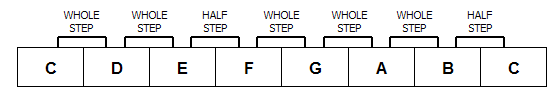
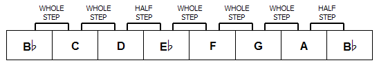

| Scales are simply intervallic patterns. |
| They are constructed according to a specific set of rules. |
| Below is the rule for generating a Major scale. |
| While the first example starts on a C, the rule for any scale can be applied beginning with any note. |
|  |
| Applying this same rule and beginning on B, we generate a B Major scale: |
|  |
Return to music theory.